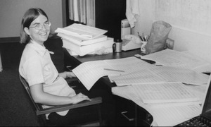
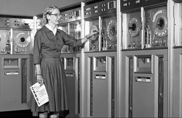

Veja aqui algumas mulheres que fizeram história na tecnologia
Ada Lovelace
Inglaterra, 1815 - 1852 Foi a primeira pessoa a criar um programa computacional. Durante o século XIX, ela analisava e traduzia diversos materiais matemáticos e, a partir disso, Lovelace criou o primeiro algoritmo. Na época, ainda não existiam computadores capazes de testar esse código, somente anos depois foi possível comprovar que funcionava.
Carol Shaw
Estados Unidos, 1955 É a designer e programadora de videogames por trás do clássico jogo River Raid, publicado pela Activision em 1982 para o console de videogame Atari 2600, que hoje em dia é retrô. O jogo de Shaw, graças em parte à sua complexidade, aos recursos visuais e, é claro, à diversão, chegou a vender mais de 1 milhão de cartuchos. Os críticos o aclamaram como um dos melhores jogos para o Atari 2600
GRACE Murray Hopper
Estados Unidos, 1906 - 1922 a analista de sistemas da Marinha dos Estados Unidos nas décadas de 40 e 50, e durante esse tempo desenvolveu a linguagem de programação Flow-Matic, que serviu como base para a criação do COBOL (Linguagem Comum Orientada para Negócios)usado até hoje em processamento de bancos de dados comerciais
